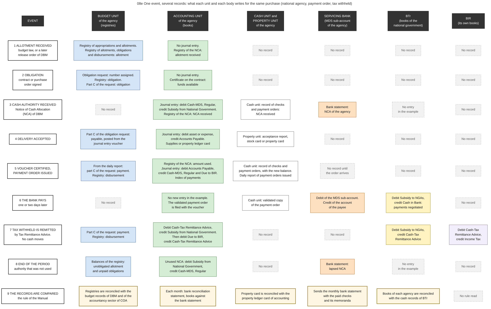

Diagram 08e · Mermaid flowchart
One event, several records: what each unit and each body writes for the same purchase (national agency, payment order, tax withheld)
Question: For each event of one purchase, which unit of the agency and which other body writes a record, what does each record say, and where does one body record nothing although another body has recorded the event?

What the diagram shows
- Question: for each event of one purchase, which unit of the agency and which other body writes a record, what does each record say, and where does one body record nothing although another body has recorded the event?
- Idea: no single record contains the whole transaction. Five units or bodies write about the same money, each in its own record and on its own date. An obligation exists only in the registries of the budget unit. The first journal entry of the purchase itself is made when the delivery is accepted. The Treasury records the spending of the agency only when the bank has paid. A cell with the words "No record" is therefore information: it shows which body cannot see the event from its own records.
- How to read it: each row is one event, in the order of time. Each column is one keeper of records. Column 1 = the event. Column 2 (blue) = budget unit of the agency: registries, no double entry. Column 3 (green) = accounting unit of the agency: books with double entry. Column 4 (white) = cash unit and property unit of the agency. Column 5 (orange) = the servicing bank. Column 6 (yellow) = books of the national government kept by BTr. Column 7 (violet) = books of BIR. Grey with a dashed border = this keeper writes nothing at this event. The diagram has no arrows: the cells of one row are records of the same event, and they are not steps that follow one another.
- When the records agree: at the end of a month the cash account of the agency for its NCA equals the balance of the NCA in the bank statement, after the items in transit are listed. The monthly bank reconciliation statement shows this [GAM-V1 Ch.21].
- When they disagree without an error: a payment order is issued on the last day of the month. The agency has credited its cash account (row 5). The bank and the Treasury have recorded nothing yet (row 6). The three records differ by this amount until the bank pays.
- Sources: which record is written at which event, and that appropriation, allotment and obligation have no journal entry [GAM-V1 Annex H, Ch.3 ss.8-17]. Part C of the obligation request with the columns obligation, payable and payment [GAM-V2 App.11]. Registry of the NCA with the columns allotment received, NCA received and NCA utilized [GAM-V2 App.30][GAM-V1 Ch.6 s.12]. Record of checks and payment orders of the cash unit [GAM-V2 App.34]. Daily report of payment orders issued [GAM-V2 App.13][GAM-V1 Ch.6 s.52, s.56]. Stock card and property card [GAM-V2 App.58, App.69]. NCAs and lapsed NCAs in the bank statement [GAM-V1 Ch.21 s.2, s.8]. Entries of the Treasury: "To recognize MDS checks negotiated" [GAM-V1 Annex H]. Tax Remittance Advice in three sets of books [GAM-V1 Ch.5 s.38, Annex H]. Reversion of the unused NCA [GAM-V1 Ch.19 s.55]. The reconciliations of row 9 [GAM-V1 Ch.2 s.8, Ch.21 s.4].
- The cells that say no entry in the example: the worked example of the Manual lists the entries of the Treasury. It contains no entry of the Treasury for the issue of an NCA and none for a lapsed NCA [GAM-V1 Annex H]. I did not read the accounting rules of BTr itself.
- Limit: the diagram shows the records that the Manual of 2015 prescribes. In an agency that uses BTMS the records of columns 2, 3 and 4 are entries in one system (chapter 16).
Code

---
title: "08e One event, several records: what each unit and each body writes for the same purchase (national agency, payment order, tax withheld)"
config:
flowchart:
wrappingWidth: 900
---
flowchart LR
%% QUESTION THIS DIAGRAM ANSWERS: for each event of one purchase, which unit of the agency and which other body writes a record, what does each record say, and where does one body record nothing although another body has recorded the event?
%% IDEA: no single record contains the whole transaction. Five units or bodies write about the same money, each in its own record and on its own date. An obligation exists only in the registries of the budget unit. The first journal entry of the purchase itself is made when the delivery is accepted. The Treasury records the spending of the agency only when the bank has paid. A cell with the words "No record" is therefore information: it shows which body cannot see the event from its own records.
%% READING: each row is one event, in the order of time. Each column is one keeper of records. Column 1 = the event. Column 2 (blue) = budget unit of the agency: registries, no double entry. Column 3 (green) = accounting unit of the agency: books with double entry. Column 4 (white) = cash unit and property unit of the agency. Column 5 (orange) = the servicing bank. Column 6 (yellow) = books of the national government kept by BTr. Column 7 (violet) = books of BIR. Grey with a dashed border = this keeper writes nothing at this event. The diagram has no arrows: the cells of one row are records of the same event, and they are not steps that follow one another.
%% WHEN THE RECORDS AGREE: at the end of a month the cash account of the agency for its NCA equals the balance of the NCA in the bank statement, after the items in transit are listed. The monthly bank reconciliation statement shows this [GAM-V1 Ch.21].
%% WHEN THEY DISAGREE WITHOUT AN ERROR: a payment order is issued on the last day of the month. The agency has credited its cash account (row 5). The bank and the Treasury have recorded nothing yet (row 6). The three records differ by this amount until the bank pays.
%% SOURCES: which record is written at which event, and that appropriation, allotment and obligation have no journal entry [GAM-V1 Annex H, Ch.3 ss.8-17]. Part C of the obligation request with the columns obligation, payable and payment [GAM-V2 App.11]. Registry of the NCA with the columns allotment received, NCA received and NCA utilized [GAM-V2 App.30][GAM-V1 Ch.6 s.12]. Record of checks and payment orders of the cash unit [GAM-V2 App.34]. Daily report of payment orders issued [GAM-V2 App.13][GAM-V1 Ch.6 s.52, s.56]. Stock card and property card [GAM-V2 App.58, App.69]. NCAs and lapsed NCAs in the bank statement [GAM-V1 Ch.21 s.2, s.8]. Entries of the Treasury: "To recognize MDS checks negotiated" [GAM-V1 Annex H]. Tax Remittance Advice in three sets of books [GAM-V1 Ch.5 s.38, Annex H]. Reversion of the unused NCA [GAM-V1 Ch.19 s.55]. The reconciliations of row 9 [GAM-V1 Ch.2 s.8, Ch.21 s.4].
%% THE CELLS THAT SAY NO ENTRY IN THE EXAMPLE: the worked example of the Manual lists the entries of the Treasury. It contains no entry of the Treasury for the issue of an NCA and none for a lapsed NCA [GAM-V1 Annex H]. I did not read the accounting rules of BTr itself.
%% LIMIT: the diagram shows the records that the Manual of 2015 prescribes. In an agency that uses BTMS the records of columns 2, 3 and 4 are entries in one system (chapter 16).
H0["EVENT"]:::head ~~~ H1["BUDGET UNIT<br/>of the agency<br/>(registries)"]:::head ~~~ H2["ACCOUNTING UNIT<br/>of the agency<br/>(books)"]:::head ~~~ H3["CASH UNIT and<br/>PROPERTY UNIT<br/>of the agency"]:::head ~~~ H4["SERVICING BANK<br/>(MDS sub-account<br/>of the agency)"]:::head ~~~ H5["BTr<br/>(books of the<br/>national government)"]:::head ~~~ H6["BIR<br/>(its own books)"]:::head
A0["1 ALLOTMENT RECEIVED<br/>budget law, or a later<br/>release order of DBM"]:::ev ~~~ A1["Registry of appropriations and allotments.<br/>Registry of allotments, obligations<br/>and disbursements: allotment"]:::bud ~~~ A2["No journal entry.<br/>Registry of the NCA:<br/>allotment received"]:::acc ~~~ A3["No record"]:::none ~~~ A4["No record"]:::none ~~~ A5["No record"]:::none ~~~ A6["No record"]:::none
B0["2 OBLIGATION<br/>contract or purchase<br/>order signed"]:::ev ~~~ B1["Obligation request: number assigned.<br/>Registry: obligation.<br/>Part C of the request: obligation"]:::bud ~~~ B2["No journal entry.<br/>Certificate on the contract:<br/>funds available"]:::acc ~~~ B3["No record"]:::none ~~~ B4["No record"]:::none ~~~ B5["No record"]:::none ~~~ B6["No record"]:::none
C0["3 CASH AUTHORITY RECEIVED<br/>Notice of Cash Allocation<br/>(NCA) of DBM"]:::ev ~~~ C1["No record"]:::none ~~~ C2["Journal entry: debit Cash-MDS, Regular,<br/>credit Subsidy from National Government.<br/>Registry of the NCA: NCA received"]:::acc ~~~ C3["Cash unit: record of checks<br/>and payment orders:<br/>NCA received"]:::cash ~~~ C4["Bank statement:<br/>NCA of the agency"]:::bank ~~~ C5["No entry<br/>in the example"]:::none ~~~ C6["No record"]:::none
D0["4 DELIVERY ACCEPTED"]:::ev ~~~ D1["Part C of the obligation request:<br/>payable, posted from the<br/>journal entry voucher"]:::bud ~~~ D2["Journal entry: debit asset or expense,<br/>credit Accounts Payable.<br/>Supplies or property ledger card"]:::acc ~~~ D3["Property unit: acceptance report,<br/>stock card or property card"]:::cash ~~~ D4["No record"]:::none ~~~ D5["No record"]:::none ~~~ D6["No record"]:::none
E0["5 VOUCHER CERTIFIED,<br/>PAYMENT ORDER ISSUED"]:::ev ~~~ E1["From the daily report:<br/>part C of the request: payment.<br/>Registry: disbursement"]:::bud ~~~ E2["Registry of the NCA: amount used.<br/>Journal entry: debit Accounts Payable,<br/>credit Cash-MDS, Regular and Due to BIR.<br/>Index of payments"]:::acc ~~~ E3["Cash unit: record of checks and<br/>payment orders, with the new balance.<br/>Daily report of payment orders issued"]:::cash ~~~ E4["No record until<br/>the order arrives"]:::none ~~~ E5["No record"]:::none ~~~ E6["No record"]:::none
F0["6 THE BANK PAYS<br/>one or two days later"]:::ev ~~~ F1["No record"]:::none ~~~ F2["No new entry in the example.<br/>The validated payment order<br/>is filed with the voucher"]:::acc ~~~ F3["Cash unit: validated copy<br/>of the payment order"]:::cash ~~~ F4["Debit of the MDS sub-account.<br/>Credit of the account<br/>of the payee"]:::bank ~~~ F5["Debit Subsidy to NGAs,<br/>credit Cash in Bank:<br/>payments negotiated"]:::btr ~~~ F6["No record"]:::none
G0["7 TAX WITHHELD IS REMITTED<br/>by Tax Remittance Advice.<br/>No cash moves"]:::ev ~~~ G1["Part C of the request: payment.<br/>Registry: disbursement"]:::bud ~~~ G2["Debit Cash-Tax Remittance Advice,<br/>credit Subsidy from National Government.<br/>Then debit Due to BIR,<br/>credit Cash-Tax Remittance Advice"]:::acc ~~~ G3["No record"]:::none ~~~ G4["No record"]:::none ~~~ G5["Debit Subsidy to NGAs,<br/>credit Cash-Tax<br/>Remittance Advice"]:::btr ~~~ G6["Debit Cash-Tax<br/>Remittance Advice,<br/>credit Income Tax"]:::bir
I0["8 END OF THE PERIOD<br/>authority that was not used"]:::ev ~~~ I1["Balances of the registry:<br/>unobligated allotment<br/>and unpaid obligations"]:::bud ~~~ I2["Unused NCA: debit Subsidy from<br/>National Government,<br/>credit Cash-MDS, Regular"]:::acc ~~~ I3["No record"]:::none ~~~ I4["Bank statement:<br/>lapsed NCA"]:::bank ~~~ I5["No entry<br/>in the example"]:::none ~~~ I6["No record"]:::none
J0["9 THE RECORDS ARE COMPARED<br/>the rule of the Manual"]:::ev ~~~ J1["Registries are reconciled with the<br/>budget records of DBM and of the<br/>accountancy sector of COA"]:::chk ~~~ J2["Each month: bank reconciliation<br/>statement, books against<br/>the bank statement"]:::chk ~~~ J3["Property card is reconciled with the<br/>property ledger card of accounting"]:::chk ~~~ J4["Sends the monthly bank statement<br/>with the paid checks<br/>and its memoranda"]:::chk ~~~ J5["Books of each agency are reconciled<br/>with the cash records of BTr"]:::chk ~~~ J6["No rule read"]:::none
classDef default fill:#ffffff,stroke:#444444,color:#111
classDef head fill:#333333,stroke:#111111,color:#ffffff
classDef ev fill:#ffffff,stroke:#111111,stroke-width:2px,color:#111
classDef bud fill:#d6e4f7,stroke:#1f4e8c,color:#111
classDef acc fill:#d5ecd5,stroke:#2e6b2e,color:#111
classDef cash fill:#ffffff,stroke:#444444,color:#111
classDef bank fill:#fde0c2,stroke:#a35200,color:#111
classDef btr fill:#fff3bf,stroke:#8a6d00,color:#111
classDef bir fill:#f3eefa,stroke:#5b3a8c,color:#111
classDef chk fill:#fdf6e3,stroke:#8a6d1a,color:#111,stroke-width:2px
classDef none fill:#f2f2f2,stroke:#999999,stroke-dasharray: 4 4,color:#555